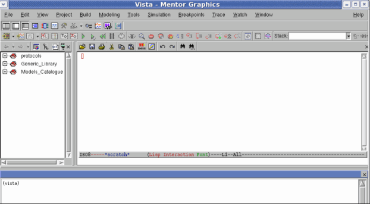
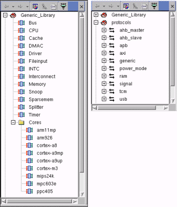
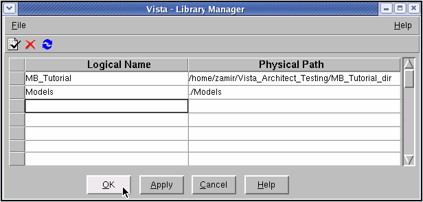

Libraries
When Vista is first invoked, two libraries are displayed in the Vista browser: Generic Library and Protocols.
Figure 4‑1.
Main Vista Window and Browser

The Vista Generic Library contains the generic models and core models that are provided with Vista.
The Protocol library lists all pre-defined communication protocols that are available.
You will be creating your own libraries to store your customized TLM models.
Figure 4‑2.
Generic Library and Protocols

To define and create TLM models in Vista:
- Begin by creating your own library, in which to store TLM2.0 models. Select File > Open Library Manager.
A table of libraries is displayed in the Library Manager.
Figure 4‑3.
Library Manager

- You can define a new library in the Library Manager by specifying a logical name and a physical path. (New directories for paths specified in the Physical Path column are created automatically.)
- At this point you are ready to define models. It is recommended that you start by defining a Vista Project which will incorporate your models. This will allow you to reference your model's generated code in your Project when the model is saved and code is generated.